field log
I'm Adib — Hatiya Island → Dhaka College · HSC 2027 · Science (Physics · Chemistry · Math · English · Statistics). Golden A+ in SSC 2025. Now chasing GOLDEN A+ in HSC and a seat in BUET CSE.
I write code the way I crossed the river — one line at a time. Frontend first, backend and automation on the side.
right now
- 📘 HSC 2027 — Physics · Chemistry · Math · English · Statistics (4th subject)
- 🛠 building —
agentic-sync·dchall(Dhaka College Hall) ·dcsc(DC Science Club) · voicetyping - 🎯 target — Golden A+ → BUET CSE (fall 2027 / Jan 2028 admission)

projects
| project | what it is | where |
|---|---|---|
| agentic-sync | multi-agent sync engine experiment | github |
| dchall | Dhaka College Hall — official hall web platform | live |
| dcsc | Dhaka College Science Club portal | live |
| voicetyping | voice-to-type tool | github |
| adi.pro.bd | my corner of the web | portfolio |
| seadib.blogspot.com | articles, notes, dev writeups | blog |
| drsahitto.blogspot.com | literature & creative writing | blog |